创建报告模板
-
在质量仪表板 — 报告生成器对话框中，点击从零开始创建 。
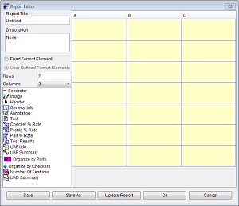
-
在报告编辑器对话框中，输入下列值。
参数名称
参数值
报告标题
xxx 汇总报告
[xxx 表示您名字的首字母缩写]
描述
带图像的汇总报告
用户定义的格式单元
[确保选择的是这个选项]
行
8
列
2
您可以随时更改行和列的数量，但是，如果您在添加单元之后减少了行或列的数量，那么单元可能会丢失或者内容被截短。
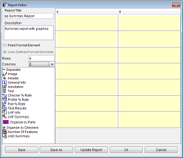
-
调整质量仪表板 — 报告生成器以及报告编辑器对话框的位置，以便您可以同时看到它们。
-
在报告编辑器的底部，点击更新报告。
质量仪表板 — 报告生成器对话框将更新，报告标题显示在选项卡上。
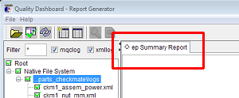
-
在报告编辑器对话框中，将标题(Header)单元拖进第一行 A 列的单元格中。
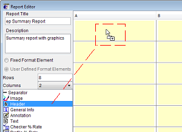
任意报告单元都可以被重新放置到任意空白单元格中，如果您不小心将单元拖进了错误的单元格中，只要选择该单元，然后将它拖到合适的空单元格中即可。
-
右击标题单元并选择编辑。
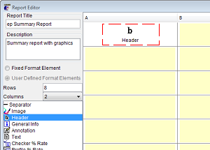
-
在标题编辑器对话框中，设置下列值。
参数名称
参数值
Bold
[选中该复选框]
文本框
汇总报告
-
点击确定。
在质量仪表板 — 报告生成器对话框中，将在选项卡区域的报告名称旁出现一个保存符号
 。这个图像表示当前报告视图已过期。
。这个图像表示当前报告视图已过期。 -
在报告生成器对话框中，点击更新报告，然后在质量仪表板 — 报告生成器对话框中查看更新后的内容。
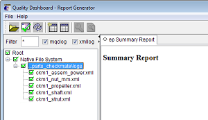
-
将文本(Text)单元拖进第一行 B 列的单元格中。
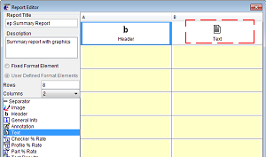
-
右击文本单元格并选择编辑。
提示
您也可以双击单元格以打开文本编辑器对话框。
-
在文本编辑器对话框中，设置下列值。
参数名称
参数值
Bold
[选中该复选框]
文本框
$DATE <br> $PROGRAM
系统将会处理宏字符串 $DATE 以显示当前日期。
HTML 标签 <br> 是一个换行符。
宏字符串 $PROGRAM 将会显示用于生成日志数据的 NX 版本。 -
点击确定。
-
点击更新报告。
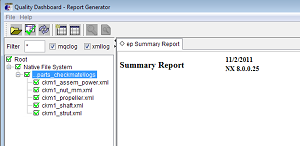
-
将分隔符(Separator)拖进第二行 A 列的单元格中。

-
点击更新报告。
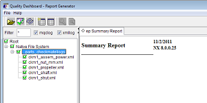
-
右击分隔符单元隔并选择跨度→增加列跨度。
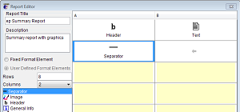
-
点击更新报告。
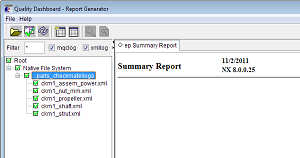
-
将图像(Image)单元拖进第三行 B 列的单元格中。
-
双击图像单元格。
-
在图像编辑器对话框的水平对齐列表中，选择中心。
-
在图像文件名输入框中，点击 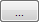 并从[Check-Mate 练习文件]\my_reports 文件夹中打开文件 ckm1_power_assy.png。
-
在图像文件名对话框中，移除路径，使其只剩下 ckm1_power_assy.png。
只指定文件名而不是使用完整路径，将使报告格式更通用，质量仪表板 — 报告生成器将在当前定义的图像文件夹列表中搜索图像文件。

我需要指定图像的宽度和高度吗？

不需要。如果将宽度与高度都设为零，则将会使用图像的实际大小。
-
点击确定。
-
点击更新报告。
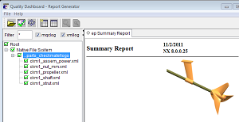
为甚图像不显示在我的报告中？
如果您的图像未正确显示，请检查您定义的图像搜索路径。
-
在报告模板中再添加三个单元。
添加的单元
目标单元格
按部件组织(Organize by Parts)
第三行 A 列
检查器百分率(Checker % Rate)
第四行 B 列
部件百分率(Part % Rate)
第六行 B 列
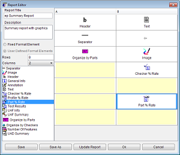
-
点击更新报告。
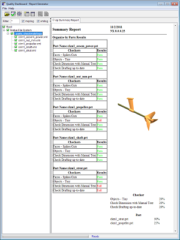
-
要允许报告单元并排显示，右击按部件组织并选择跨度→增加行跨度。再进行两次这个操作以便以使单元按部件组织的跨度为四行。
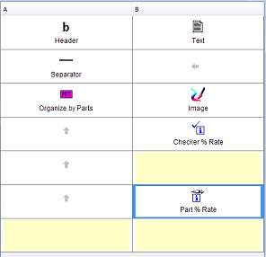
-
点击更新报告。
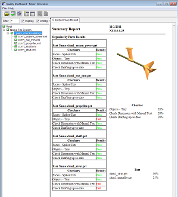
-
在报告编辑器对话框中，点击保存。
-
在保存对话框中，浏览至文件夹[Check-Mate 练习文件]\my_reports。
-
在文件名输入框中，键入 xxx_summary_report_template，其中 xxx 表示您名字的首字母缩写。
-
点击保存。
报告模板将以文件扩展名.qdr 进行保存。
-
在报告编辑器对话框中，点击确定。
-
在质量仪表板 — 报告生成器对话框中，右击汇总报告选项卡并选择关闭。